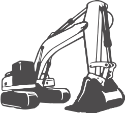
Mini giratória
- Abrir valas e fundações
- Demolir
- Escavar para piscina ou fossa
- Nivelar e limpar terreno
Do terreno à última pintura. Começamos com a mini giratória, levantamos paredes, isolamos, tratamos da luz e da água e deixamos tudo pintado. Um só contacto para a obra toda.
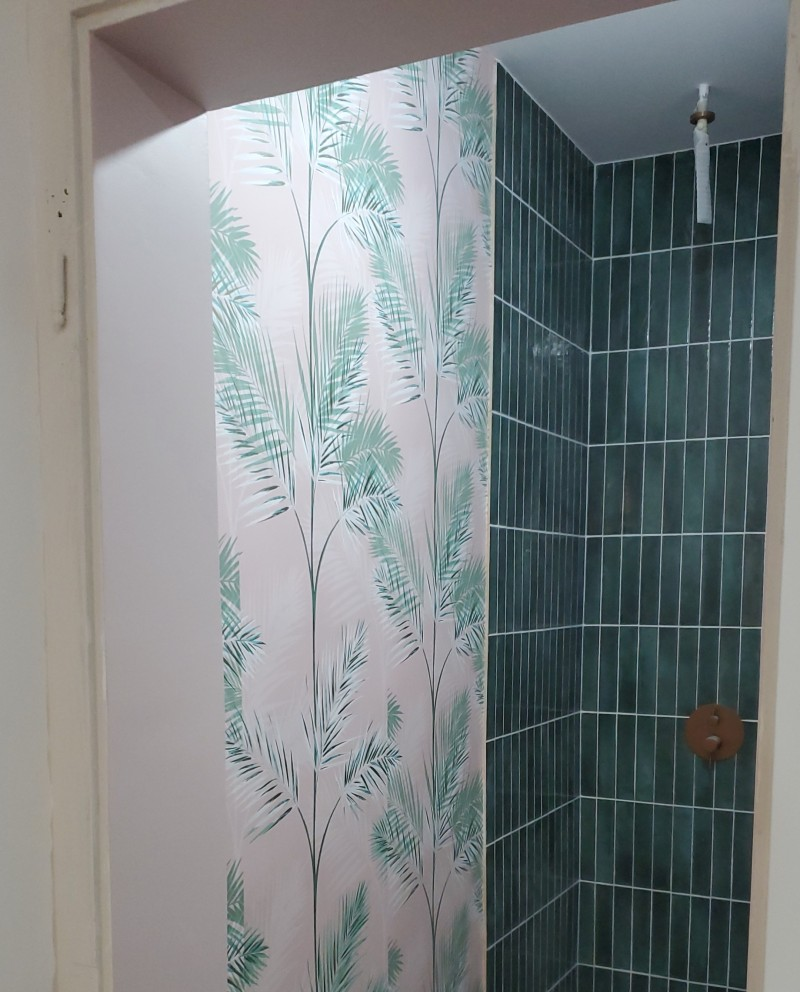
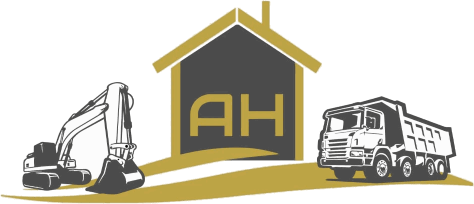
CONSTRUÇÕES E
REMODELAÇÕES TOTAIS
Pode pedir a obra inteira ou só a parte que falta. Carregue na obra que procura e o pedido abre já com ela escolhida.
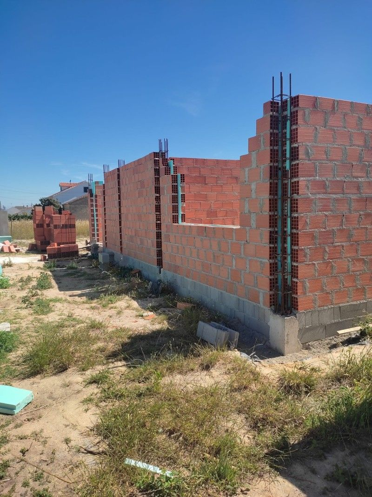
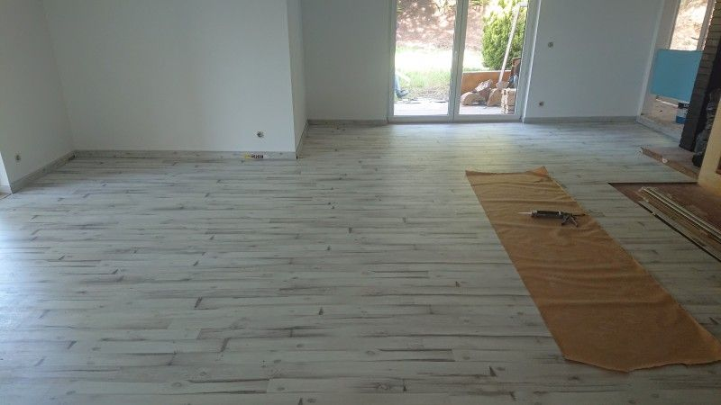
Muitas obras começam antes das paredes: é preciso abrir valas, escavar e tirar terra. Fazemos essa parte com a mini giratória e a carrinha basculante, as duas máquinas do logótipo.
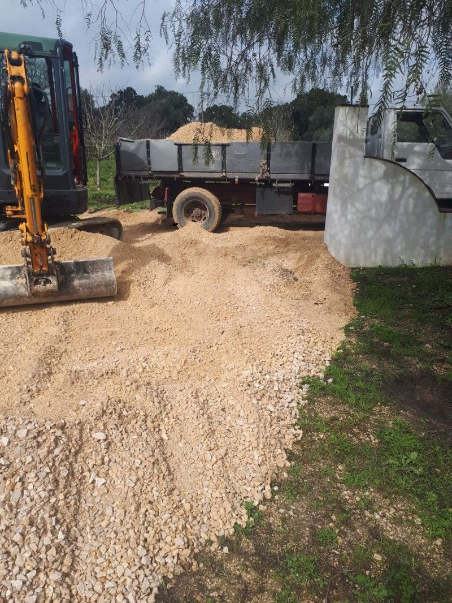

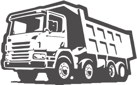
Medidas e cargas: a confirmar.
Fotografias das nossas obras, umas já acabadas e outras a meio. Carregue numa foto para a ver em grande. Ver as avaliações no Zaask
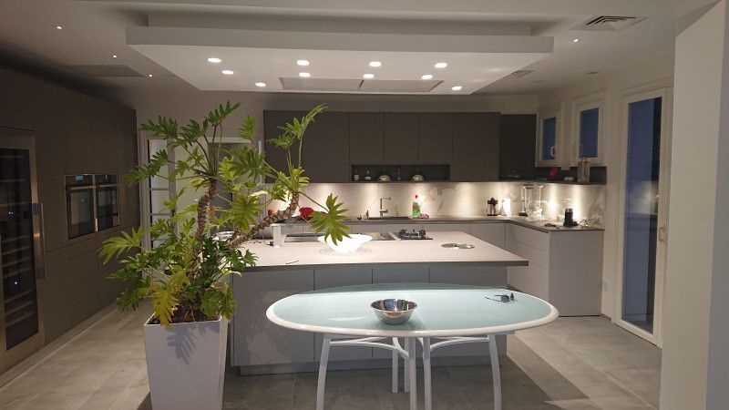
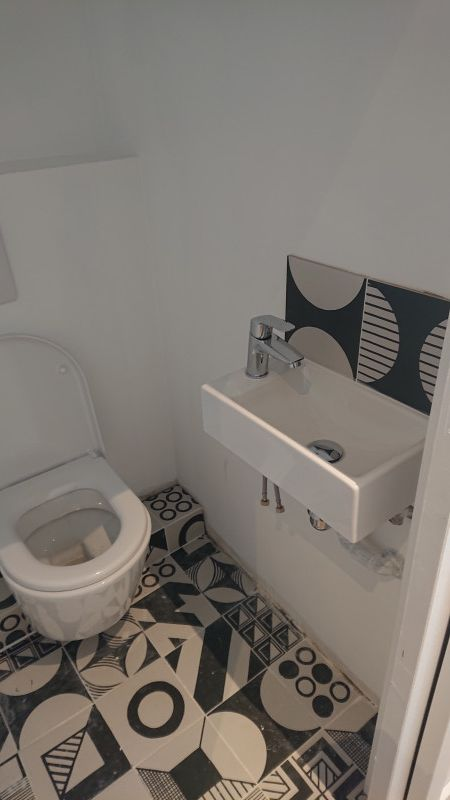
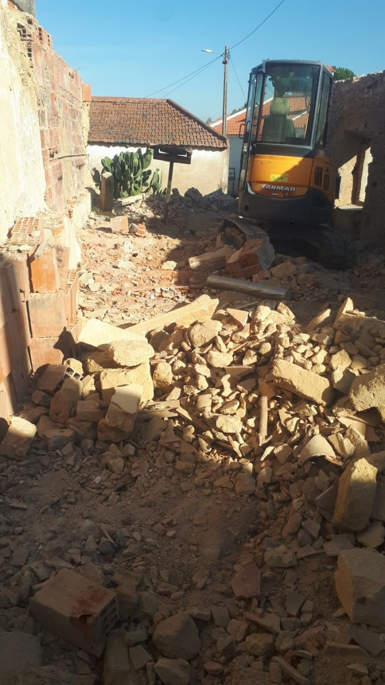
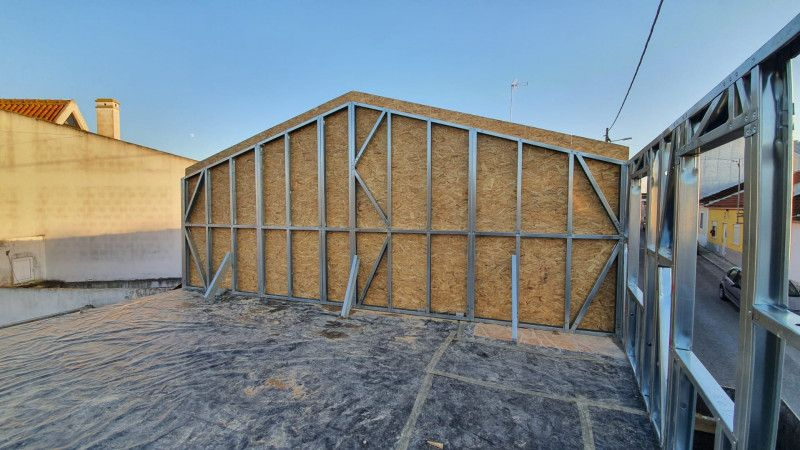
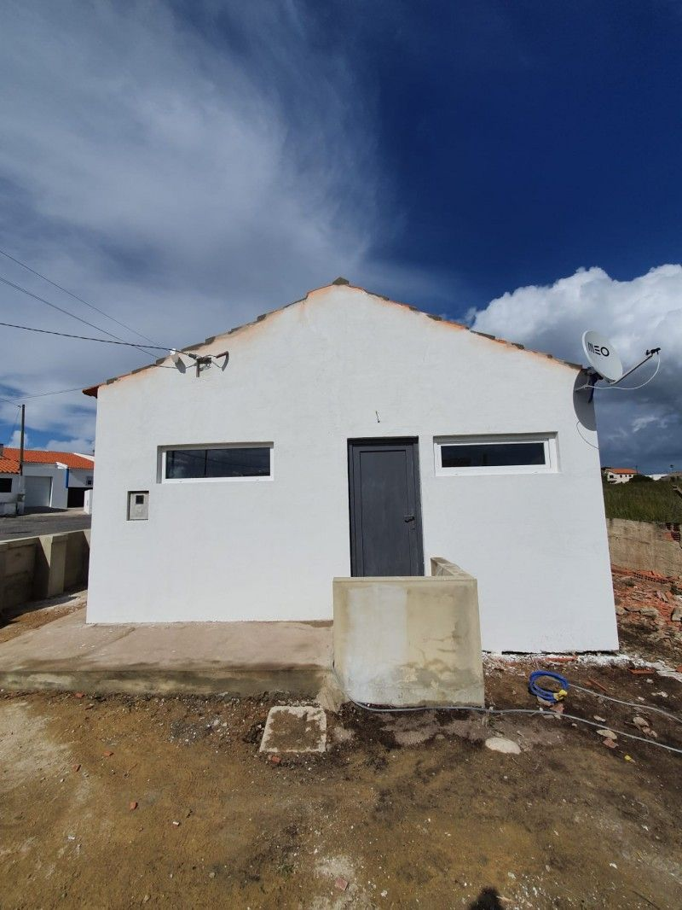
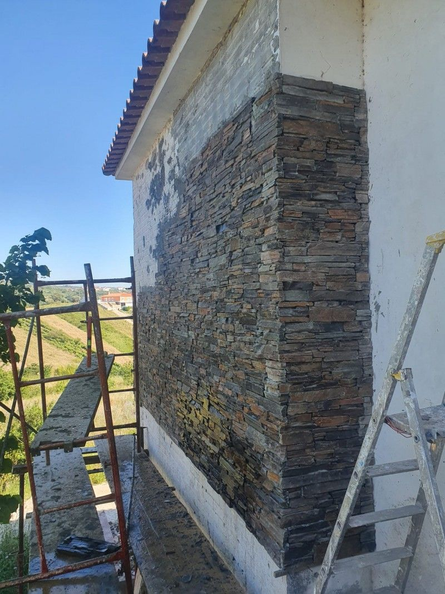
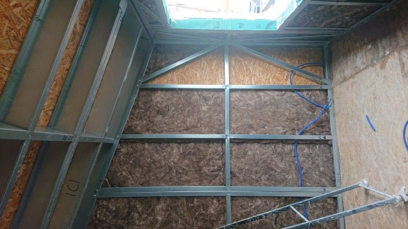
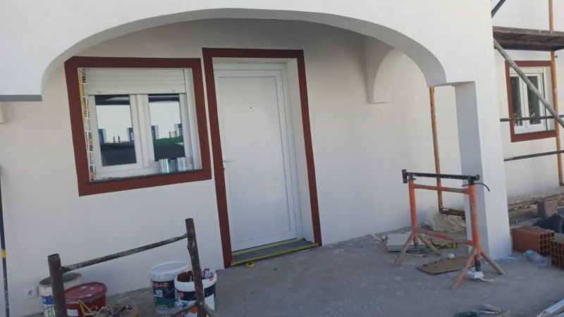
Primeiro saiu o telhado velho. Depois levou estrutura nova em aço leve.
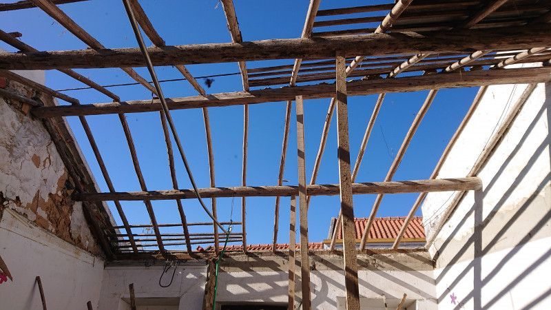
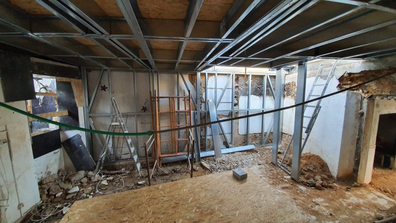
Escolha a obra, diga onde é e, se quiser, escreva duas linhas. A mensagem fica pronta e só sai quando a enviar.
Ainda não escolheu o tipo de obra.
Mudou a mensagem à mão. O que escolher ou escrever no formulário já não entra nela.
Depois, no WhatsApp, junte duas fotos: uma de longe, para se ver o sítio, e outra de perto, para se ver o problema.
O preço a sério só depois de ver o sítio. As fotos ajudam-nos a preparar a visita, não a substituem.
Esta página não guarda nada.
Prazo de resposta: a confirmar.